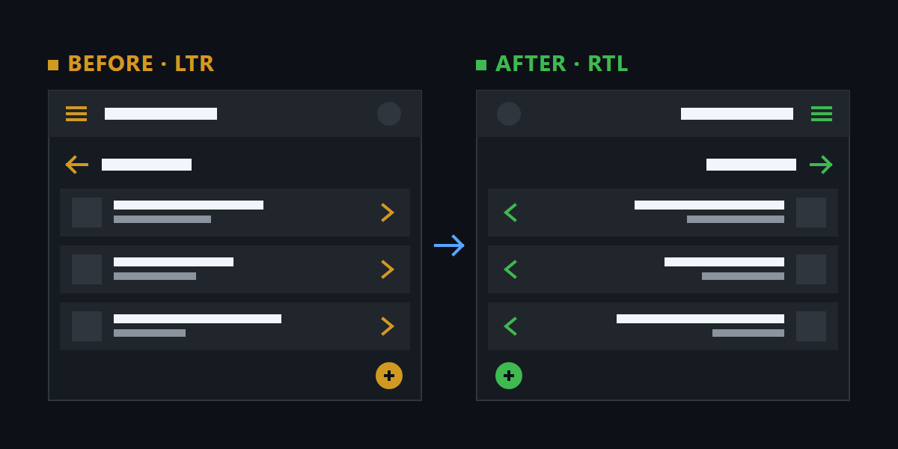
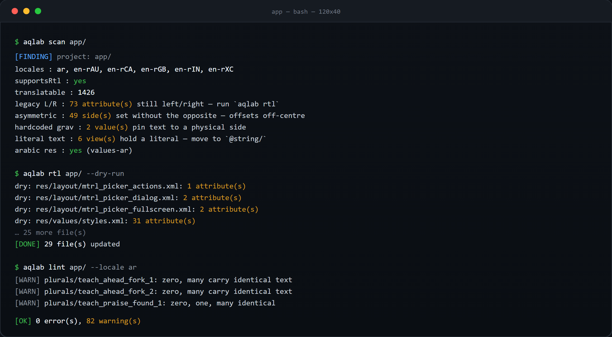

الترجمة لحالها ما تكفي. لو التخطيط ما انعكس، القائمة تبقى على اليسار والسهم يشير للجهة الغلط، والتطبيق يبقى يحس إنه أجنبي. هذي نفس الشاشة قبل وبعد:

aqlab rtl
16 سمة انعكست

هذي مخرجات فعليّة من المشروع التجريبي — مو رسم توضيحي.
$ aqlab scan app.apk [FINDING] project: app.apk locales : default only supportsRtl : NO — run `aqlab rtl` translatable : 12 legacy L/R : 16 attribute(s) still left/right $ aqlab rtl app/ [PATCH] AndroidManifest.xml: android:supportsRtl="true" [PATCH] res/layout/activity_main.xml: 13 attribute(s) [PATCH] res/layout/list_item.xml: 7 attribute(s) [PATCH] res/values/styles.xml: 2 attribute(s) [DONE] 4 file(s) updated $ aqlab scaffold app/ --locale he [DONE] scaffolded 12 entries -> app/res/values-he translated: 0 pending: 13 translate: app/values-he.tsv $ aqlab lint app/ --fail-under 100 [DONE] 13/13 translated (100.0%) exit 0 — جاهز لـ CI
كل بند هنا مقيس على APK حقيقي، مو وعد.
يحوّل كل left/right إلى start/end، ويضيف supportsRtl. وما يلمس التثبيتات المقصودة — الأزرار اللي لازم تبقى يسار.
العربية ستّ صيغ، الإنجليزية ثنتين. الجداول مولّدة من CLDR الحقيقي، مو مخمّنة — 227 لغة، وتقسيم حسب المنطقة.
يكشف الأخطاء اللي تصير لما يختلط العربي باللاتيني أو الأرقام. الأخطاء اللي ما تنشاف بالعين وتطلع بالجهاز.
%s و%1$d تبقى كما هي. أي انحراف بالمُحدِّد يفشل الفحص قبل ما يوصل للمستخدم.
فك، وعدّل، وأعد البناء، ووقّع — كلها بأمر واحد. أو كل خطوة لحالها لما تحتاج تحكّم.
--json يطبع مستند نظيف، و--fail-under يبوّب التغطية. يشتغل على 3.9 إلى 3.13، ويندوز/لينكس/ماك.
إحدى عشرة خطوة، كل واحدة تشتغل لحالها أو متسلسلة.
aqlab scan <apk>تقرير للقراءة فقط — ما يغيّر ولا بايتaqlab rtl <dir>يمكّن RTL ويحوّل left/right إلى start/endaqlab scaffold <dir> --locale heينشئ مجلد اللغة وجدول ترجمةaqlab apply <dir> --tsv he.tsvيستورد الترجمات من الجدولaqlab translate <dir> --tmيعبّي من ذاكرة ترجمة ومصطلحاتaqlab lint <dir>فحص المُحدِّدات والهروب والتغطيةaqlab xliff <dir>يحمي المُحدِّدات بـ <xliff:g>aqlab diff a.apk b.apkالفرق بين نصوص نسختينaqlab build <dir>إعادة بناء + zipalign + توقيعaqlab all app.apk -o out.apkالسلسلة كاملة بأمر واحدالعربية أصعب حالة — ستّ صيغ جمع مقابل ثنتين بالإنجليزي، زائد bidi. عشانها كل الفحوصات بُنيت. بس هي الحد الأقصى، مو النطاق:
تسجيل حقيقي على ChessAssistant 1.1.10 —
93 ملف تخطيط. كل رقم تحت من تنفيذ فعلي، مو تقدير.
نفس التطبيق: ChessAssistant 1.1.10 —
93 ملف تخطيط، و102 سمة left/right موزّعة على 29 ملف.
| aqlab | يدوي | |
|---|---|---|
| فك التطبيق | aqlab decode | تنزيل apktool، حفظ مسار الجار، أمر طويل |
| عكس 102 سمة | 5.2 ثانية، 29 ملف، صفر سمة باقية | فتح 29 ملف، بحث واستبدال، ونسيان واحد يكسر الشاشة |
| السمات اللي ما لازم تنعكس | يتجاهل التثبيت المقصود، ويبلّغ عن غير المتماثل | بحث-واستبدال أعمى يعكس اللي مو المفروض |
| supportsRtl | تلقائي | تذكّر تعديل المانيفست |
| صيغ الجمع | جداول CLDR، 227 لغة | تحتاج تعرف إن العربي ست صيغ، وإلا انهيار بـMissingFormatArgument |
| المُحدِّدات %s | تُفحص قبل البناء، وتفشل الـCI | تنكسر بصمت، وتنكشف بالمستخدم |
| إعادة البناء والتوقيع | aqlab build | zipalign + apksigner بأوامر منفصلة |
| يكرر نفس الشغل | جدول ترجمة يُعاد استعماله، وذاكرة ترجمة | كل نسخة جديدة من الصفر |
| التحقق قبل الشحن | lint --fail-under | يدوياً، أو لا شي |
ليس مثالاً مكتوباً. مقطع من
res/layout/abc_list_menu_item_layout.xml
داخل ChessAssistant 1.1.10 — قبل وبعد aqlab rtl.
<RelativeLayout
android:layout_marginLeft="?listPreferredItemPaddingLeft"
android:layout_marginRight="?listPreferredItemPaddingRight" />
<TextView
android:layout_alignParentLeft="true" />
<RelativeLayout
android:layout_marginStart="?listPreferredItemPaddingStart"
android:layout_marginEnd="?listPreferredItemPaddingEnd" />
<TextView
android:layout_alignParentStart="true" />
لاحظ الـmarginStart — مو بس اسم جديد، قيمته انقلبت من ?listPreferredItemPaddingLeft إلى ?listPreferredItemPaddingStart. لو انقلب الاسم بس، التخطيط يبقى معكوس.
الفحص والتعديل على النصوص والتخطيط: لا. البناء والتوقيع: إيه — يحتاج apktool وaapt2. الأداة تكتشفهم وتقول لك شنو ناقص بالضبط.
ما يلمس إلا موارد النصوص والتخطيط. --dry-run يطبع الخطة قبل أي كتابة، و--json يعطيك تقرير كامل. جرّب على نسخة أول.
بايثون قياسي فقط، ملف واحد، صفر اعتماديات. يعني يشتغل بلا بيئة معقّدة، وما ينكسر لما تتحدّث مكتبة.
3.9 إلى 3.13، على ويندوز ولينكس وماك. المصفوفة كلها مختبَرة على CI — عشرة ناقلات، كلها خضراء.
إيه. رخصة MIT — استخدمه وعدّله ووزّعه بلا قيود.
أمر واحد للتثبيت. أمر واحد للفحص — وما يغيّر ولا بايت.